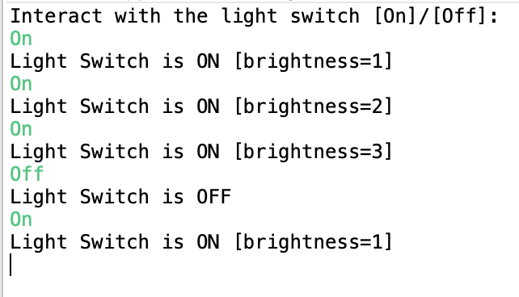

Java Code Generation
This example demonstrates how to generate Java code from a statechart. We will use a simple light switch example and focus on the generator model.
Generator Model
In order to generate code we need to specify which code generator to use and into which folder to generate. For this, we need to create a so-called generator model. To do so,
- Select the models folder in the Project Explorer
- Right-click and choose New -> Code generator model
- Follow the wizard to select the Java code generator and the state machine for which you want to generate Java code
The new generator model will look similar to this one:
This is the simplest possible generator model. Besides setting up the target location, the generator model allows you to adjust several aspects of the generated code like naming, license comments or function inlining. Press [CTRL]+[SPACE] to get a list of available features. For more information, please refer to our documentation.

Invoking Code Generation
Code generation is usually invoked each time the statechart model is saved. This behavior can be disabled by unchecking the option Project -> Build Automatically. You can always manually invoke the code generation with Generate Code Artifacts in the context menu of the generator model.
The Example Application
As an example application we will use the light switch example with brightness adjustment from the Basic Tutorial.

Our application is a simple interactive console with which the user can switch the light on or off. The complete application code is implemented in Main.java:
The most important parts are commented in the Main.java file. These are the bullet points:
- Instantiate the state machine and the observers
- Initializes the state machine, in particular all variables are set to a proper value
- Subscribe observers
- Enters the state machine; from this point on the state machine is ready to react on incoming event
- Raise the input events
user.on_buttonanduser.off_button - React on the out events
light.onandlight.off
You can run the application with Run As -> Java Application on the Main.java file. A console should open and ask you for input like in the screenshot below.
